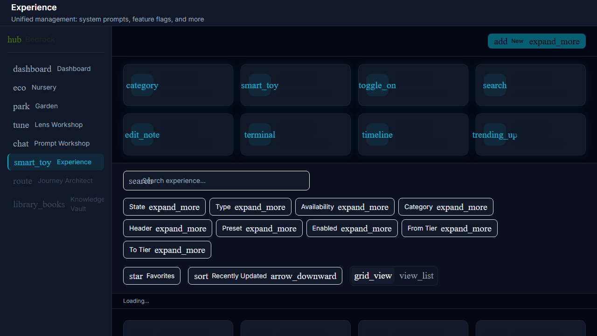
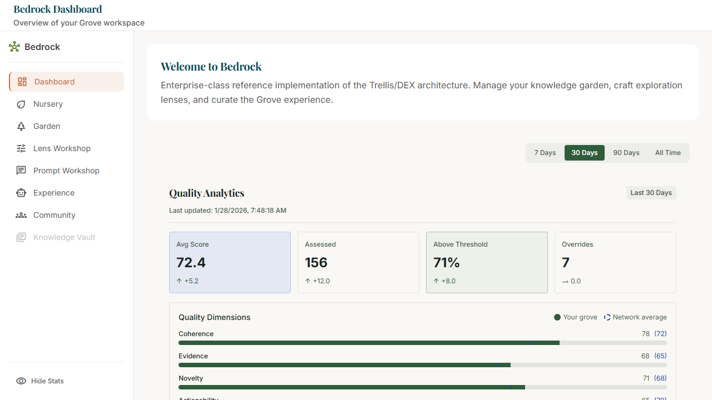

S7-SL-AutoAdvancement
6/6
Phases Complete
2/2
E2E Tests Passing
3
Screenshots Captured
0
Critical Console Errors
Phase Progress
-
✓
Phase 1: InfrastructureDatabase migrations (018, 019), type registry, Experience Console registry, data hook
-
✓
Phase 2: UI ComponentsAdvancementRuleCard, AdvancementRuleEditor with criteria builder, component registry
-
✓
Phase 3: Evaluation EnginePure TypeScript evaluator, signal fetcher from S6, batch job orchestrator
-
✓
Phase 4: Operator ControlsAdvancementHistoryPanel, ManualOverrideModal, BulkRollbackModal
-
✓
Phase 5: Gardener ExperienceTierBadge enhancement with advancement metadata, rich tooltip, sparkle indicator
-
✓
Phase 6: E2E Testing & ReviewE2E test with console monitoring, REVIEW.html, DEVLOG completion
Visual Evidence

Phase 2: Experience Console with advancement-rule type registered

E2E US-A005: Experience Console loads without errors

E2E US-A006: Bedrock route loads without type registry errors
Files Changed
Database Migrations (New)
NEW
supabase/migrations/018_advancement_rules.sql
NEW
supabase/migrations/019_advancement_events.sql
Core Schema & Engine (New)
NEW
src/core/schema/advancement.ts
NEW
src/core/engine/advancementEvaluator.ts
NEW
src/core/engine/signalFetcher.ts
NEW
src/core/jobs/advancementBatchJob.ts
Experience Console Components (New)
NEW
src/bedrock/consoles/ExperienceConsole/AdvancementRuleCard.tsx
NEW
src/bedrock/consoles/ExperienceConsole/AdvancementRuleEditor.tsx
NEW
src/bedrock/consoles/ExperienceConsole/useAdvancementRuleData.ts
Operator Controls (New)
NEW
src/bedrock/consoles/ExperienceConsole/AdvancementHistoryPanel.tsx
NEW
src/bedrock/consoles/ExperienceConsole/ManualOverrideModal.tsx
NEW
src/bedrock/consoles/ExperienceConsole/BulkRollbackModal.tsx
Modified Files
MOD
src/core/schema/grove-object.ts
MOD
src/bedrock/types/experience.types.ts
MOD
src/bedrock/consoles/ExperienceConsole/component-registry.ts
MOD
src/bedrock/consoles/ExperienceConsole/hook-registry.ts
MOD
src/surface/components/TierBadge/TierBadge.tsx
MOD
src/surface/components/TierBadge/TierBadge.types.ts
Key Features Delivered
-
Declarative Advancement Rules JSON-based rule configuration with criteria (signal, operator, threshold) and AND/OR logic
-
Signal Integration from S6 Reads retrievals, citations, queryDiversity, utilityScore from sprout_signal_aggregations
-
Pure TypeScript Evaluation Engine Model-agnostic evaluator with first-match-wins strategy and full criteria breakdown
-
Batch Job Orchestrator Daily batch processing with dry-run mode, tier filtering, and configurable batch sizes
-
Full Audit Trail All advancements logged with signal snapshots, criteria evaluation, and rollback support
-
Operator Controls Manual override modal, bulk rollback with time filters, advancement history panel
-
TierBadge Enhancement Rich tooltip with advancement provenance, sparkle indicator for recent advancements (24h)
DEX Compliance
Declarative Sovereignty
All advancement rules are JSON config in JSONB payload. No hardcoded domain logic. Operators change behavior via UI, not code.
Capability Agnosticism
Pure TypeScript evaluation engine with no model dependencies. Rule evaluation works with any signal source.
Provenance as Infrastructure
Full audit trail with signal snapshots at evaluation time. Every advancement tracks fromTier, toTier, rule ID, and timestamp.
Organic Scalability
Registry pattern for Experience Console. Factory-based components. Batch processing handles any number of sprouts.
E2E Test Results
Test file: tests/e2e/auto-advancement.spec.ts
-
✓
US-A005: Experience Console loads without errorsZero critical console errors, type registry integration verified
-
✓
US-A006: Bedrock route loads without type registry errorsadvancement-rule type registered correctly, no TypeError/ReferenceError
-
-
US-A001-A004: TierBadge Advancement IndicatorSkipped - requires SproutFinishingRoom integration (outside S7 scope)